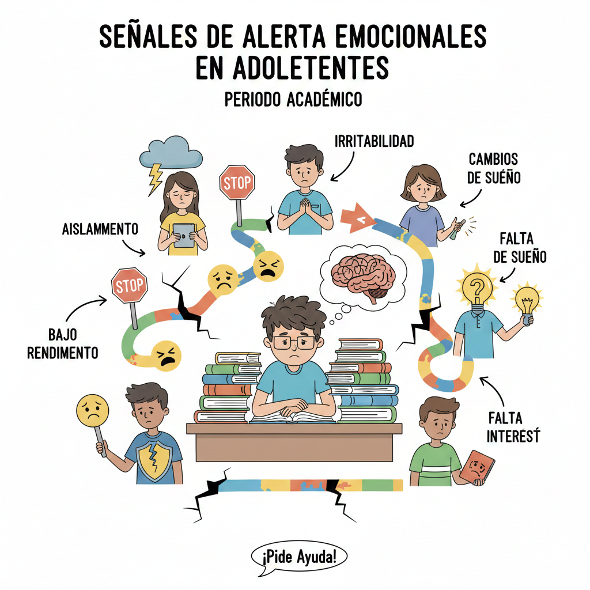

🎭 Emocionales
- Tristeza persistente o sensación de "vacío".
- Irritabilidad extrema o ataques de ira.
- Pérdida de interés en actividades que antes disfrutabas.
- Sentimientos de culpa o inutilidad.
- Ansiedad o preocupación constante por el futuro.